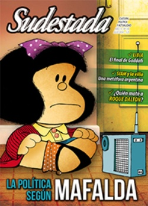

Buscar
Edición N° 130
Julio 2014
Revista bimensual
Comprar edición impresaSumario
- La política según Mafalda
- ¿Quién mató a Roque Dalton?
- De Buitres y otros rapiñeros
- Junto al pueblo...
- Las horas finales de Gadaffi
- Crónica de dos orillas
- El antropólogo salvaje
- La apropiación criminal de la cultura
- Un marxismo para los movimientos sociales
- "En el subte puedo conectar profundo con la gente"